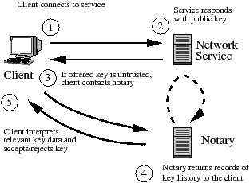
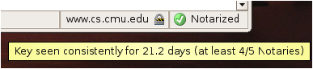

Carnegie Mellon University
The popularity of 'Trust-on-first-use' (Tofu) authentication, used by SSH and HTTPS with self-signed certificates, demonstrates significant demand for host authentication that is low-cost and simple to deploy. While Tofu-based applications are a clear improvement over completely insecure protocols, they can leave users vulnerable to even simple network attacks. Our system, Perspectives, thwarts many of these attacks by using a collection of 'notary' hosts that observes a server’s public key via multiple network vantage points (detecting localized attacks) and keeps a record of the server’s key over time (recognizing short-lived attacks). Clients can download these records on-demand and compare them against an unauthenticated key, detecting many common attacks. Perspectives explores a promising part of the host authentication design space: Trust-on-first-use applications gain significant attack robustness without sacrificing their ease-of-use. We also analyze the security provided by Perspectives and describe our experience building and deploying a publicly available implementation.
Despite decades of research into techniques for establishing secure communication channels for networked applications, many of today’s popular protocols remain vulnerable to Man-in-the-Middle (MitM) attacks. Some applications provide no security whatsoever (e.g., HTTP), and others rely on self-signed keys or Diffie-Hellman-like key exchange that can protect against eavesdroppers, but not against active adversaries who can interpose on communication between the two parties.
While MitM attacks are not new, widespread use of shared wireless networks coupled with recent discoveries of automated MitM attacks in the wild indicate that the threat is increasingly relevant. For example, the Arpiframe worm uses ARP poisoning to interpose on the HTTP traffic of other hosts on the same LAN [25], while worms exploiting simple vulnerabilities in home routers exposed end-hosts to 'drive-by pharming' attacks that use DNS to redirect clients fake versions of security-sensitive websites [21]. Furthermore, a study by Reis et al. used client-side measurements to confirm that real-time snooping and modification of web traffic is a reality in today’s networks [18].
In this paper, we examine a novel approach to authenticating a server’s public key. Traditional approaches to server key authentication, such as a public-key infrastructure (PKI) [5,7], rely on trusted entities (e.g., Verisign) that grant certificates based on the validation of real-world identities. When done securely, such verification requires significant (often manual) effort. While some network hosts, primarily commercial websites, can afford to pay the high verification cost for these certificates, clients have no simple and effective means to authenticate connectivity to most other hosts on the Internet.
Because the high cost of creating and managing a host PKI presented a substantial barrier to the replacement of completely insecure protocols such as telnet, the SSH model of host authentication emerged as a pragmatic solution. Authentication in the SSH model relies on the user’s discretion to decide if an unauthenticated key is valid. Keys deemed valid by the client are cached locally and used to authenticate subsequent communication with the same server. While some users may verify all new or changed server public keys in a secure manner (e.g., by memorizing a key fingerprint or verifying the key via an alternate trusted channel), users often simply assume the absence of an adversary on the initial connection and accept the initial key without verification. We refer to this common approach as Trust-on-first-use (Tofu) authentication (it is also known as 'leap-of-faith' authentication).
The Tofu approach has two primary weaknesses:
These weaknesses in the Trust-on-first-use approach are particularly severe in the case of websites using self-signed SSL certificates, because web clients tend to visit a large number of sites, increasing the number of vulnerable initial connections. Moreover, web users often lack the means and/or expertise to manually verify keys.
Perspectives improves on basic Tofu authentication by having a collection of semi-trusted hosts called network notaries periodically probe a large number of network services (e.g., SSH and HTTPS servers) to build a record of the public keys used by those services over time. When a client receives an unauthenticated public key from a service, it contacts the notaries to download the history of keys used by that service. This additional data from diverse network vantage points over a span of time gives clients the 'perspective' to make a strictly better security decision: clients can often detect attacks during an initial connection or a key cache conflict, the two scenarios when the standard Tofu authentication is most vulnerable.
Because notaries generate their data using automated network probes, applications using Perspectives enjoy the same simplified deployment model as SSH: no certificate authority is needed to verify the identity of server owners and grant them certificates. Instead, the validity of a service’s key is determined by its existence on the network over time. While the notary infrastructure adds some complexity to a Tofu-based application, it exists independent of both clients and servers. Servers can remain unmodified while updated clients benefit from notary data.
While this paper focuses on protocols that use unauthenticated keys (i.e., the SSH model), Perspectives can also help even when PKI-signed certificates are used. As we discuss in Section 8, because users often ignore browser security warnings [9,19], a MitM attacker can fool a user by injecting a bogus self-signed certificate in the place of a PKI-signed certificate. Perspectives clients can easily detect this attack by comparing the received certificate with those seen by the notaries.
This paper makes four primary contributions:

Figure 1: Overview of a client using Perspectives. In practice, several notaries would be contacted in parallel before making a key trust decision.
We name our system Perspectives because it helps clients make sound security decisions by leveraging views from multiple network vantage points. Perspectives’ task is to help clients determine whether they should accept an untrusted public key received while connecting to a particular network service. Example services include SSH access to an end-host or HTTPS access to a website that uses a self-signed SSL certificate.
Perspectives uses a set of publicly available servers, called network notaries, that monitor and record the history of public keys used by a network service. A notary cryptographically signs (i.e., notarizes) statements saying that at time t it observed service S using public key K. The basic operation of Perspectives is shown in Figure 1. When a client connects to a network service, it receives an offered key in reply. If the offered key is unauthenticated (i.e., it does not match an existing key in the client cache) the client must either accept the offered key, taking a security risk, or reject the key, losing the ability to communicate with the service. To obtain more information to make this decision, the client contacts a set of notaries and requests all observed key data for that service. The client then uses application-specific key-trust policies (Section 4) to interpret this data and accept or reject the key. These policies check for consistency between the offered key and the keys seen by each notary, often allowing clients to distinguish between a legitimate key and an attack.
Attackers mount MitM attacks by providing clients with a false public key in order to observe or modify network communications. In our attack model, an adversary can compromise any path in the network as well as components of the notary infrastructure itself. Only the client and server themselves must be completely trusted, a standard requirement for host authentication schemes.
While our model allows any network or notary component to be compromised, we borrow from Abraham Lincoln and assume that an attacker 'can fool all of the [components] some of the time, and some of the [components] all of the time, but it cannot fool all of the [components] all of the time.' That is, we assume that attacks are either: (1) localized to a particular network scope or (2) of limited duration, since a larger attack is more easily detected and remedied.
In this paper, we use the term redundancy to describe the protections that Perspectives provides. Key observations gathered from multiple network vantage points provide spatial redundancy, since unless an attacker can compromise all network paths to a destination, notary data will let a client to detect that an attack is likely underway. Temporal redundancy, provided by the key history data returned by each notary, can offer additional protection because even if an attacker compromises all paths to the server, clients can still detect that a recent key change occurred and regard the new key with suspicion. Finally, data redundancy (described in Section 5) helps clients detect malicious notaries that supply inconsistent information, thereby limiting the effectiveness of attacks on the notary infrastructure itself.
The precise attack resistance provided Perspectives depends entirely on how a client’s key-trust policy sets the parameters defining spatial, temporal, and data redundancy in order to balance the risk of accepting an unauthenticated key with the possibility of incorrectly rejecting a valid key. Sections 4 and 6 explore this trade-off in detail.
At a high level, Perspectives might be described as a 'lightweight PKI'. While both Perspectives and a standard PKI require that clients securely retrieve one or more public keys to bootstrap trust, there are two key differences between Perspectives and the traditional PKI currently used to grant SSL certificates:
Because probing by network notaries does not protect against all possible network attacks, we expect that highly sensitive services like bank or large e-commerce websites will continue to use heavyweight PKI mechanisms (possibly augmented with notary data, see Section 8). However, we believe that Perspectives provides a simple and cost-effective way to improve the attack resistance of services that currently either use Trust-on-first-use or are completely unauthenticated.
We now explore how the notary infrastructure provides spatial and temporal redundancy to help clients evaluate an untrusted public key. We defer some implementation details until Section 7. Notary servers are a coordinated group of hosts distributed across the Internet. Notary clients are integrated into applications (e.g., an SSH client) and contact notary servers to download observed key data with which to make a key-trust decision.
We envision a network notary group to be a fixed group of at least five (but possibly many more) servers located in diverse network locations. The group may be run by a single entity, but we design it in a decentralized fashion to also support a cooperative deployment in which universities, ISPs, hosting providers, or other well-known organizations each contribute one or two nodes.1 Cooperative Internet testbeds like PlanetLab [15] and RON [2] are another attractive deployment option. For simplicity we describe a single notary group, but in practice multiple notary groups controlled by different entities could operate in parallel.
Each notary group is organized by a notary authority that determines which machines are legitimate notary servers. The notary authority has a public/private key pair and publishes its public key (KAuthority) using an out-of-band mechanism (e.g., as with Tor, the key could be distributed with any software that accesses the notary group). To add a notary server X to the system, X’' owner generates a public/private key pair and furnishes the public key KX and its IP address AX to the notary authority. Each day the notary authority publishes a list of notary server IP address (Ai) and public key (Ki) pairs to each of the notary servers in the systems, along with a signature S = {Date, (A1, KA1), (A2, KA2), ..., (An, KAn) }KAuthority-1 . A client can contact any notary server, download the list, and validate this signature using KAuthority to receive a fresh list of notary IP addresses and public keys.
Notary servers monitor the public key(s) used by a network service over time. A notary server provides clients with an application-independent query interface, but uses application-aware probing modules to monitor different types of services (e.g., SSH or HTTPS). A probing module observes keys by connecting to the service and mimicking an ordinary client until it receives the service’s public key, at which point it disconnects.
Each notary server uses a local database to store a service entry for each monitored service. A service entry contains all observed key data the notary has recorded while monitoring that service over time (see Figure 2). An entry is uniquely identified by the combination of a service-type, which identifies the protocol used to retrieve the key (e.g., HTTPS)2 and a service-id, which provides the information necessary to contact the service (e.g., hostname and port). The observation history of each key is stored as one or more key timespans. A key timespan is a start and end timestamp pair (tstart, tend) that indicates a period of time during which the notary observed only that key for the service. When the notary makes a new observation it updates the corresponding service entry in the following manner: if the observed key is the same key observed during the previous observation, the notary simply updates the tend value of the most recent key timespan to the current time. Otherwise, the notary creates a new key timespan with both tstart and tend set to the current time and adds this timespan and the new key (if necessary) to the service entry. If a probe fails to receive a key from the service, the notary creates or updates a timespan with a 'null key' containing no key data.
The notary also stores a cryptographic signature for each service entry in the database. Using its private key, the notary calculates a signature over all data in the service entry: the (service-id, service-type), as well as each key and its associated key timespans. This signature is updated following each modification of the service entry. Section 7 measures the overhead of this simple signature scheme and mentions potential optimizations.
The client application contacts the notary whenever it receives a key from a service that does not match an existing entry in its cache. This may occur because the client has never contacted the service or because the offered key does not match the already cached key for the service.
When contacting an individual notary (Figure 3), the client specifies a (service-type, service-id) pair. The notary finds the corresponding entry in its database and replies with observed key data consisting of keys and their associated timespan(s), along with a signature over that data using the notary’s private key.
Notary Protocol: C → N : S = (service-id, service-type) N: (O,{O}KN−1) = find_service_entry(S) N → C : O, {O}KN−1
Figure 3: The basic notary protocol between a single client (C) and the notary server (N).
The process by which a client queries for and receives notary data is described in Figure 4. Recall that a notary client learns about all notary servers and their public keys using a list distributed by the notary authority. The client’s key-trust policy (Section 4) determines n, the number of notaries that the client should contact. The client then randomly chooses n entries from the list of notaries and queries these servers in parallel using UDP.3 The querying process is complete once enough notaries have replied for the client policy to make a trust decision, or when the client determines that all remaining notaries are unreachable (clients implement a simple retransmission strategy). The client validates the signature for each response using that notary’s public key, discarding any invalid responses.
| Check-Unauthenticated-Key(s, Koffered) { |
| O = {} // all observations for service s |
| All-Notaries = load_notary_addresses() |
| Chosen-Notaries = choose_random(n, All-Notaries) |
| foreach x in Chosen-Notaries in parallel |
| (Ox, {Ox}Kx−1) = contact_notary(x,s) |
| Kx = load_notary_key(x) |
| if( verify_signature(Ox, {Ox}Kx−1, Kx)) |
| O = O ⋃ Ox |
| if( ! check_trust_policy(Koffered, O) ) |
| abort_connection() |
| } |
Figure 4: How a client checks an unauthenticated key Koffered for service s. Details of check_trust_policy() are discussed in Section 4.
Once a client has received observed key data from notary servers, it uses a key-trust policy to accept or reject an offered key based on this data. Code implementing the client policy decision examines the offered key and all validated observed key data, and may also consider inputs such as previously cached keys, user security preferences, or even active user input. Upon completion, the client application either accepts the key and continues running the protocol or rejects the key and disconnects.
The SSH model (which includes both Trust-on-first-use and Perspectives) presents clients making a key-trust decision with a basic security vs. availability trade-off: faced with an untrusted key, the client can take a security risk and accept the key, or be safe and reject the key, at the cost of making the service (at least temporarily) unavailable. For example, when faced with an unauthenticated key, standard Trust-on-first-use makes two different security vs. availability trade-offs: First, if no key is cached for the service, Tofu chooses availability at the cost of security by always accepting the offered key. Second, in the case of a key conflict, a Tofu application cannot automatically accept the key, so it must favor security over availability or prompt the user for help.
Lacking useful information about the key’s validity, Tofu applications are stuck making this inflexible trade-off. In contrast, because Perspectives provides additional data indicating whether a key is likely to be the result of an attack, it allows application key-trust policies to make significantly more intelligent security vs. availability trade-offs.
In this section we explore several variations on client key-trust policies. We do not claim that these policies are optimal (in fact, significantly more nuanced and complex policies exist), but rather offer them as evidence that even simple policies can support a wide range of security vs. availability trade-offs.
Recall that Perspectives provides security by
allowing clients to leverage spatial redundancy (key observations
from multiple vantage points) and temporal redundancy (key
observations over time). Therefore, the role of a client policy is
to test the spatial and temporal consistency of the offered key
with respect to notary data. To provide a framework for reasoning
about spatial and temporal consistency, we introduce threshold
parameters that quantitatively represent these properties.
Definition: For a set of n notary servers, a service
S, and a threshold q (0 ≤ q ≤ n) we say
that a key K has quorum at time t iff at
least q of the n notaries report that K is the
key for S at time t.
Intuitively, for values of q that are large relative to
n, a key that has quorum indicates consensus among the
observations made by the all notaries at a single point in time. We
use another threshold parameter to extend the concept of quorum
into the temporal realm.
Definition: For a set of n notary servers, a service
S, and a quorum threshold of q, a key K has a
quorum duration of d at time t iff for all
t′ such that (t − d) ≤ t′ ≤ t
the key K had quorum with threshold q at time
t′.
Quorum duration indicates how long, without interruption, a set of
notaries has consistently seen a particular key.4 Applications can make
security vs. availability trade-offs by choosing to accept an
untrusted key only if it exceeds a particular quorum duration
threshold. Higher q and d thresholds provide more
security, but risk reducing availability by incorrectly rejecting
valid keys. For example, setting q equal to the total number
of notaries n provides the strongest protection against
accepting a false key, but also means that a single unavailable or
compromised notary could cause the client to reject a valid key.
Similarly, a higher quorum duration threshold d protects
against a strong attacker that compromises many paths for a
significant amount of time, but would also require clients to
reject connections to services that are new or have recently
changed keys.
Next, we consider three examples of how the concepts of quorum
and quorum duration might be used by a Perspectives client policy.
Example Policy: Expert User
Same number of warnings, more useful data.
We first consider a client application policy for a 'expert user'
who understands the risk of a MitM attack and is familiar with the
SSH authentication model. In this case, the client always warns the
user but also includes concise summaries of the notary data that
help the user make a better security vs. availability decision.
Similar to existing Tofu client, policy behavior depends on whether
the offered key conflicts with an existing cache entry.
Case 1: No Server Key Cached
In this case, the user is not necessarily suspicious of the new key, but she will use observed key data to confirm that the key is consistent across many notaries and that the duration of the key history is commensurate with her expectation of key age. If quorum duration is satisfied, the policy module may supply a message like:
Key seen consistently for the past Z days.
If the key fails to achieve quorum or does not have sufficient quorum duration based on policy parameters, the user might see one of the following warnings:
SUSPECTED ATTACK: Offered key is NOT consistent. Only X of Y notaries currently see it.
WARNING: Server key has only been seen consistently for the past Z days.
Case 2: Offered Key Differs from Cached Key
In this case, the user must distinguish between a legitimate server key change and a falsely injected key. As in Case 1, the user will be interested in the prevalence and duration of the offered key, since a substantial quorum duration indicates a higher likelihood that the conflicting key is the result of a legitimate server key change:
Offered key conflicts with cached key, but has been consistently seen for Z days.
Additionally, because the policy has access to the cached key that is currently trusted for the server, the policy might also highlight portions of the key history that cast suspicion on the new key. For example, a warning might indicate that some notaries are still currently observing the cached key, suggesting that the server has not actually changed its key:
LIKELY ATTACK: Offered key conflicts with cached key and cached key is still observed by X of Y notaries!
Interpreting such statements requires little additional work on the part of the user but provides her with vastly more information than warnings in current Tofu applications like SSH. In the rare case that such a summary is insufficient, expert users may view all observed key data, similar to how web browsers optionally display SSL certificates.
Example Policy: Non-Expert User 1
Same number of warnings, varied severity.
Because non-expert users are unlikely to want or be able to make good security decisions based on the notary data itself, another policy approach is use a quorum duration test to determine how severe of a warning to give the user. For example, a simple approach would be to give users a standard warning as long as three-quarters of the notary servers have seen the key for at least a day (i.e., q = 0.75 · n and d > 1 day), but give them a more severe and intrusive 'security failure' warning if notary data detects a key inconsistency indicating a probable attack.
For HTTPS the need for such a policy to distinguish likely attacks from valid self-signed replies is increasingly evident, as new versions of two major browsers (Internet Explorer 7 and Firefox 3) have introduced new user interfaces that treating self-signed certificates as failures by default. Rather than simply displaying a warning dialog, the new interfaces do not render the page at all and instead display an error page similar to a failed connection.
Example Policy: Non-Expert User 2
Fewer warnings, based on high-level preferences.
Much usability research suggests that web users often make bad security decisions by ignoring warnings [9,19]. Instead of using quorum duration to determine the severity of a warning, a client could choose to issue no warning at all if an offered key has sufficient quorum duration. The precise values for q and d may be determined by high-level user preferences for 'high security' or 'medium security' already common in browsers today.
While the merits of this approach is ultimately a usability question, this tactic may help reduce 'banner blindness' associated with browser security warnings. As an additional benefit, this approach could increase overall adoption of HTTPS by eliminating the frequent security dialogs that likely make some website owners hesitant to use self-signed certificates at all.
The final aspect of the notary design is data redundancy, a cross-validation mechanism that limits the power of a compromised or otherwise malicious notary server.
To implement data redundancy each notary acts as a shadow server for several other notaries. As described below, a shadow server stores an immutable record of each observation made by another notary. Whenever a client receives a query reply from a notary, the client also checks with one or more of that notary’s shadow servers to make sure that the notary reply is consistent with the history stored by the shadow server.
An adversary in control of a notary and its corresponding private key can provide clients with false observed key data. Data redundancy prevents a notary from changing data already recorded in its observation history, much as schemes such as forward-secure signatures [3] do. As a result, an attacker that compromises a notary cannot, for example, create a new malicious key and falsely claim that this key has been stably seen over a long period of time. This cross-validation ensures that the only way an adversary can make a malicious key appear 'stable' is by sustaining a network attack for a commensurate amount of time, even with notary compromises. Additionally, data redundancy guarantees that a notary, even after compromise, cannot give conflicting answers to two clients querying about the same service. This property (which cannot be achieved using forward-secure signatures) could help hosts scan for and detect notaries that act maliciously.
Each entry in the list published by the notary authority also lists MAX-REDUNDANCY other notaries that each act as a shadow server for the notary specified in the entry. A notary server is responsible for keeping all of its shadow servers up-to-date. When a notary server contacts a service S, it updates its local database and then sends the new service entry (including signature) to each of its shadows.5
Shadow servers update their shadow copies in a way that prevents malicious notaries from eliminating previously shadowed data. To do so, the shadow server requires that each key timespan in the old shadow copy either also exists in the new shadow copy or is 'contained' within a larger timespan in the new copy (i.e., both timespans have identical tstart values, but the new copy’s tend value is greater than that of the old copy). Additionally, no timespans in the new copy can overlap. If the old and new data are consistent, the old data is discarded. If an inconsistency exists, the shadow server stores both sets of observed key data and signatures. After updating, the shadow server uses its own private key to generate a signature over both the shadowed data and the signature of the other notary. This signature is stored with the shadowed data and allows clients to authenticate that a reply to a shadow request came from the correct shadow server.
Client policy specifies r (r≤ MAX-REDUNDANCY), the number of shadow servers that must corroborate a notary’s observation for it to be deemed valid. For each notary N the client contacts, it randomly selects rq (rq ≥ r) of N’s shadow servers to query. When contacting a shadow server (Figure 5), the client specifies the IP address of N as well as the service-id from the original query to N. The shadow server replies with a service entry (observed key data and signature) created by N, along with the shadow server’s signature over that data. If fewer than r of N’s shadows provide valid responses signed by Kn, the client disregards all data from N. After verifying the signatures, any inconsistencies among the original and shadowed data will cause the client to reject data from N. Additionally, because of non-repudiation, clients can provide any inconsistent data and signatures to the notary authority as evidence of a notary's malicious behavior.
| Cross-Validation Protocol: | ||
| C → SH : | { N, s } | |
| SH: | DBn = get_replica_databse(N) | |
| SH: | ON, {ON}KN−1, {ON,{ON}KN−1}KSH−1 = find_service_entry(DBN,s) | |
| SH → C : | ON, {ON}KN−1, {ON,{ON}KN−1}KSH−1 | |
Figure 5: A client (C) contacting shadow server (SH) for a shadow copy of notary N’s observed key data for service s. Note that the integrity of N’s service entry is protected in transit by a signature using the shadow server’s key.
To demonstrate the benefits of network notaries, in this section
we enumerate realistic attack scenarios and compare the security
provided by Perspectives to that offered by
basic Trust-on-first-use. We analyze both an adversary’s ability to
launch a MitM attack, as well as its ability to deny availability
(DoS) by causing a client to reject a valid key.
| Tofu | Perspectives | ||||
| Compromise | DoS | MitM | DoS | MitM | |
| Lclient | X | X | X | safe | |
|
Lserver |
X | X | X | temporal safe | |
|
k · nm |
safe | safe | k > (n - q) : X k ≤ (n - q) : safe |
safe | |
| Lserver + Lclient | X | X | X | temporal safe | |
|
Lclient + k · nm |
X | X | X | k ≥ (q + q · r) : X k ≥ q : temporal safe k < q : safe |
|
|
Lserver + k · nm |
X | X | X | k ≥ (q + q · r) : X k < (q + q · r) : temporal safe |
|
| Lserver + Lclient + k · nm | X | X | X | k ≥ (q + q · r) : X k < (q + q · r) : temporal safe |
|
Table 1: Summary of attack resistance provided by Perspectives in comparison to the standard Tofu approach. The left column contains abbreviated attack descriptions as defined in the text. Columns show resistance to availability (DoS) and MitM attacks. X indicates no resistance, 'safe' indicates that attacks are detected, and 'temporal safe' indicates temporal safety, as defined below.
MitM Attacker Resources:
Our analysis considers three possible system components which an
adversary may control. Enumerating each combination of these
possible compromises lets us analyze all scenarios relevant to the
attack resistance of Perspectives:
| Lclient: | An adversary controlling the client’s local link can modify or drop all client-to-service and client-to-notary communication. | |
| Lserver: | A compromise of the server’s local link lets an attacker inject arbitrary keys when either clients or notaries contact the server. | |
| k · nm: | A compromise of k distinct notary servers. |
As discussed earlier,
Lclient is a likely attack,
due to the prevalence of open wifi hotspots and insecure home
networks that allow compromised hosts or home routers to easily
inject or modify traffic. In contrast, servers often reside in more
controlled network environments, making
Lserver significantly
harder. This is particularly true in the case of HTTPS. Thus, to
achieve Lserver, an
adversary might compromise the gateway router for the destination,
or use BGP to falsely announce the destination’s prefix,
misdirecting some or all traffic destined for the server. An
attacker may also control arbitrary Internet routers that place it
on k of the n notary-to-service paths. However,
because this attacker is a strictly weaker version of the
k · nm attacker, we
do not examine it separately. Additionally, since
Lclient or
Lserver allows the attacker
to mount a trivial DoS attack in either scenario, we do not
explicitly mention this attack below.
Analysis Parameters:
As described in Section 4, the actual
security and availability that a client will receive depends on its
choice for the following policy parameters:
| n: | Number of notary servers contacted by the client. | |
| q: | Quorum threshold of client. | |
| r: | Number of shadow servers (per notary) the client requires for data redundancy. |
We do not directly model the length of an attack or a client’s
quorum duration. Instead, we use the concept of 'temporal safety',
which means that a client will be safe as long as its quorum
duration threshold is larger than the actual duration of the
attack.6
Table 1 summarizes the
results.
Analysis Results:
Lclient Compromise:
When only the client’s access link is compromised, Tofu provides no
defense against a MitM attack, while data from network notaries
allows a client to easily detect and avoid the same attack.
It is important to recognize that the attacker gains no MitM
advantage by using Lclient
to disrupt client-to-notary communication. All data returned by a
notary is protected by a signature from that same notary, meaning
that notary responses cannot be spoofed, even if the attacker has
compromised other notaries. Furthermore, adversaries cannot
encourage acceptance of a false key by making notaries or shadow
servers unreachable, since blocking such communication will prevent
any key (including a malicious one) from achieving quorum.
Maliciously dropping client-to-notary communication to prevent a
legitimate key from achieving quorum does not increase attacker
power, since control over
Lclient already allows for a
trivial DoS attack by simply dropping all packets.
Lserver Compromise: A
compromise of only the server link also renders a basic Tofu client
vulnerable to MitM attacks. For Perspectives, the compromise of
all paths to the server will prevent spatial diversity alone from
detecting an attack. However, historical key data provides a client
with temporal safety against network attacks.
k · nm
Compromise: The compromise of notaries alone will not enable
an adversary to inject a false key to the client and launch a MitM
attack. However, this adversary can attack availability by trying
to cause a client to incorrectly reject a valid key. Disabling k
> n - q notary servers, either by compromising them or by making
them unreachable, prevents the client from establishing a quorum
even if the remaining servers all agree on the valid public key.
Because this attack is possible even if the adversary is not on the
client-to-service path, it represents an availability vulnerability
that does not exist with the Tofu approach. However, this attack is
limited to scenarios when clients receive a new key for a service;
it does not apply to repeated connections between a client and a
server using a cached key.
Lclient +
Lserver Compromise:
The analysis of this scenario is identical to
Lserver, since, as discussed
above, using Lclient to
restrict client access to notary servers provides no attack
benefits.
Lclient + k ·
nm Compromise: Control
over the client link and some notary nodes lets the attacker use
notaries to 'promote' an invalid key using false observations. An
attacker cannot perform a MitM attack unless it compromises a full
quorum q of notaries, since the client rejects keys that do not
achieve quorum. If an attacker compromises q notary servers, the
situation is identical to the
Lserver scenario described
above: the client is still protected for a time period determined
by its quorum-duration. However, if the adversary compromises an
additional q · r notaries beyond the basic quorum, it can overcome
the data redundancy of the system. Without data redundancy the
attacker can forge the observation history, eliminating the
protections of temporal safety. 7
Lserver + k ·
nm Compromise: This
attack is stronger than the previous
Lclient + k ·
nm scenario, since control over
the destination service’s link means that even legitimate notaries
will observe the attacker’s key. As a result, even if fewer than q
notaries are compromised, the client relies entirely on temporal
safety.
Lserver +
Lclient + k ·
nm Compromise: This
scenario is identical to the previous attack. As described in the
Lserver +
Lclient case, client link
access grants no additional power if an adversary already has
server link access.
This attack analysis demonstrates that Perspectives significantly improves resistance to MitM attacks compared to Tofu. Additionally, Perspectives is robust to limited compromises of the notary infrastructure itself.
To demonstrate the viability of a network notaries and to gain experience with its deployment, we have implemented and are running a publicly available network notary on the RON testbed [22]. Additionally, we have created two different Perspectives clients: a modified version of the OpenSSH client for SSH and an extension to the Mozilla Firefox browser for use with HTTPS certificates. We have made both server and client source code publicly available at: http://www.cs.cmu.edu/~perspectives/. Our performance measurements indicate that a single notary server can monitor several million hosts a day while simultaneously handling a large number of client queries.
Our notary server code is written in C and uses the Berkeley DB library for storing observed key data and signatures. The notary probes services running either SSL or SSH using probing modules based on code from OpenSSL and OpenSSH. The only substantial difference between our implementation and the design described in Section 3 is that we do not implement data redundancy, in part because our notary deployment is run by a single trusted entity.
We benchmarked our notary server with respect to service monitoring and query response operations to demonstrate that network notaries are practical on commonplace hardware. In our implementation, notaries use 1369-bit RSA keys for service entry signatures8 and store public keys as 128-bit MD5 fingerprints.9
We run our each benchmark on two different machines. One is a
modern server (ServerFast) with two
dual-core 2 GHz AMD Opteron CPUs and 8 GB of RAM. The other server
(ServerSlow) is a three year old machine
with a single-core P4 2.4GHz CPU and 512 MB of RAM, intended to
demonstrate that a modest notary infrastructure could still be run
on older (perhaps donated) hardware. A summary of the results is
provided in Table 2.
| Operation | Operations / Sec | |
| ServerSlow | ServerFast | |
| Monitor service key | 26 | 195 |
| Monitor service key (no sig.) | 112 | 270 |
| Handle query (in memory) | 21,700 | 25,600 |
| Handle query (disk-bound) | 114 | - |
Table 2: Summary of notary server benchmarks for machines ServerSlow and ServerFast.
Monitoring Load: To benchmark notary monitoring, we
identified a set of .com domains running HTTPS using a
web-crawl and had our notary server monitor these sites (Our SSH
scans exhibited nearly identical rates and are therefore omitted).
When monitoring a service, the notary must perform the protocol
negotiation necessary to retrieve the service’s key, load the
existing service entry from the database, update the entry,
recompute the entry’s signature, and store the entry again. Our
code uses RSA signatures implemented in OpenSSL and takes the
simple (albeit heavyweight) approach of forking a process running a
slightly modified OpenSSH or OpenSSL client for each
probe.10
ServerFast and
ServerSlow performs 195 and 26 such
operations per second, respectively. While these rates may seem
small, even at only 50% utilization they correspond to 8.4 million
and 1.1 million probes per day. Table 2 also shows monitoring rates when
signatures are not computed, indicating that optimizing the
cryptographic processing by batching service records or creating a
hash-tree over multiple service entries would significantly improve
performance.
Query Handling Load: The primary consideration for query
processing performance is whether the notary’s databases fit in
memory (recall that a notary may have multiple databases due to
shadowing). With the cryptographic parameters described above, a
single service entry with several keys and timespans will consume
approximately 250 bytes. Thus, a database with one million entries
(250 MB) can easily fit even in the small memory of
ServerSlow. Table 2 shows benchmarks for both servers
responding to randomized client queries (measured over the
loop-back interface). If the database is in memory, the response
rate is above 20,000 requests/sec for both servers (because our
server code is single-threaded, there is little difference between
the two machines). To identify likely response rates when the
database must be accessed from disk, we tested
ServerSlow with a database that was four
times the size of its main memory. In this case, the speed of a
disk-seek limits the response rate to 114 queries/second. However,
even this query-processing rate (which translates to just under 10
million per day) may be viable when clients contact notaries only
on rare cache misses.11
Bandwidth Requirements: Bandwidth usage depends on both the
monitoring rate and query rate. Including all network headers and
TCP acknowledgments, monitoring a single SSH service requires about
1.5 KB of upstream bandwidth and 2.3 KB of downstream bandwidth.
For SSL the same values are 0.5 KB and 2.0 KB. Such data sizes are
comparable to a single small image embedded in a webpage.
Monitoring a million hosts a day would correspond to an average
rate of less than 213 Kb/s in each direction. With network headers,
notary requests are approximately 60 bytes and replies are 315
bytes (for standard key sizes). While handling a flood of 20,000
requests per second would require 50 Mb/s of upstream bandwidth, a
server could handle 10 million requests a day (116 requests per
second) using only 420 Kb/s.
Because we expect notary nodes to be deployed primarily by universities and large companies like ISPs or webhosting providers, we do not expect bandwidth to be a limiting factor unless a server is under DoS attack.
To demonstrate the general nature of the Perspectives approach, we created
two client implementations that access our notary group. Both
clients share common library code that reads notary configurations,
creates and parses protocol messages and implements basic quorum
duration policies. As a result, we expect that porting other
clients to work with Perspectives will not be
difficult.
OpenSSH Client: We modified the popular
OpenSSH [14] client software to
contact notary servers when no cached key exists or when the
offered key differs from the cached key. The modifications
consisted of a few library calls within the SSH code that checks
the key cache, as well as functionality to interact with the user
when making a key-trust decision (our client roughly follows the
expert user example described in Section 4). We have used the modified client within our
university for nearly a year and have found the added latency of
contacting notary servers to be negligible.
Mozilla Firefox HTTPS Client: We implemented our notary
client for HTTPS within the Mozilla Firefox extension framework,
meaning that users can easily install it without having to download
a new browser. The HTTPS notary extension (Figure 6) is written in a combination of C++ and
javascript. Whenever a certificate validation fails, the notary
client extracts the public key from the certificate and contacts
the notaries.
Our implementation allows users to set a preference for 'High Security' or 'Medium Security', which correspond to different quorum duration thresholds. Keys that achieve quorum duration are accepted automatically, while other keys result in disconnection with an error message. The 'High Availability' security setting gives expert users the ability to connect even when a key does not achieve quorum duration. These users are provided with the certificate and a summary of notary data in order to make their own key-trust decision.

Figure 6: This screen capture shows the bottom right-hand corner of a Firefox browser window, which contains the HTTPS notary extension's visual indicator. In this case, the website satisfied quorum duration, so the browser automatically accepted the certificate and suppressed the certificate warnings usually displayed to the user. The image also shows the tool-tip that summarizes the notary data for the user.
Because use of our OpenSSH and Firefox clients is currently limited to the Linux and FreeBSD/Mac OS X platforms, we also provide a web page that allows users to query notary servers even without a modified client.
Section 3 assumes a priori knowledge of what services the notary server should periodically monitor. We consider two possibilities for how notaries might build this list.
The first approach, which we use in our implementation, is for a notary to add a service to its database the first time a client queries for it. While this approach does not initially provide clients with temporal redundancy, when bootstrapping the system, notaries might probe 'on-demand' to provide even the first client with spatial redundancy to help detect Lclient attacks. A client could seed the notary with services (e.g., from the known_hosts file in SSH) and a server could register for monitoring by querying a notary with its own address as the service-id.
The second approach is to proactively discover services. For example, HTTPS websites can be found using web crawling or search engines. For less public services, such as SSH, TCP-layer scanning on standard protocol ports could discover a large number of services. We built one such scanning engine to evaluate this approach on SSH servers within our campus network and a few large public IP blocks. We found that while scanning can quickly identify tens of thousands of SSH servers, it has three key limitations. First, if reverse DNS is unavailable for an IP address, we cannot reference a service entry in terms of the DNS name. Second, such scanning misses services running on non-standard ports. Finally, scanning may be misinterpreted as an attack. Because active discovery cannot identify all services, one promising approach is to seed notaries with data from active discovery, and then identify additional services as clients query for them.
We now outline the primary considerations for choosing a notary
group’s global parameters.
Number of Notaries: Because MitM attacks are most likely at
the network edge (i.e.,
Lclient or
Lserver), increasing spatial
redundancy is likely to have diminishing returns: in the case of
Lclient, even a few valid
notaries will detect an attack, while for
Lserver, all notaries will
see the same false key. We therefore suggest that clients query
from 4 to 10 notaries, depending on their desired robustness to
notary compromises or failures.
Notary Monitoring Frequency: A notary would like to minimize
the time between when a server first comes online or changes its
public key and when the notary server observes this change. Our
measurements indicate that a single notary could monitor several
million different servers a few times each day.
Degree of Data Redundancy: The degree of data redundancy
required for a set of notaries depends greatly on who administers
individual notary nodes. If nodes are run by one or a few trusted
entities that take great care to secure the machines, little or no
data redundancy may be needed. However, even when data redundancy
is needed, MAX-REDUNDANCY can likely be small (2 to 4), because
clients can detect inconsistencies if any one of the contacted
shadow servers are not compromised.
Notaries and DNS Attacks: So far, we have focused on adversaries that compromise IP-level paths or notary servers. Adversaries could also manipulate DNS to falsely map a service’s hostname to an IP address that places the adversary 'on path'. When notaries and clients use DNS names to identify services, a compromised local or remote DNS server present the same threat as the corresponding Lclient or Lserver attack. Thus, the analysis in Section 6 applies to DNS attacks as well.
Additionally, if an attacker controls only DNS, notaries can
help clients detect and even circumvent such attacks. To do so,
notaries would also record the IP address used when monitoring a
service. If a client sees that both the service key and IP have
changed from a previously trusted or stable key, it can connect
directly to the IP addresses associated with the old key to test if
that key is still visible on the network. If the client receives
the prior key from any of the past addresses, it can (depending on
local policy) disregard the new key as a DNS attack and instead
connect directly to the address using the prior key.12
Client Privacy Considerations: While benign notary servers
would not record a client’s IP address, a malicious notary could
link client addresses and destination services, impinging on client
privacy. Because clients access the notary group only rarely (when
the offered key is not cached) and do so only when a legitimate
security threat exists, we believe that most clients will consider
this potential privacy risk acceptable.
However, clients that desire additional privacy could contact
the notary group through a proxy. One promising design for such a
proxy is to have the notary authority run a DNS nameserver for a
special notary domain (e.g., notary.com). A notary client
looking for observed key data for server.domain.com from
num-notary different servers would perform a DNS look-up
for num-notary.server.domain.com.notary.com.13 The nameserver for
notary.com would then randomly query num-notary
servers and return the base64-encoded results as a DNS TXT record.
Because of the recursive nature of DNS look-ups, the notary
nameserver would learn only general information about the client
(e.g., that they use CMU’s DNS servers), and the rest of the
notaries would learn no client-specific information. Clients are
unlikely to have privacy concerns about notary queries via local
DNS resolvers, since they already expose basic connection
information to the resolver with standard DNS look-ups.
Detecting Authentication Downgrade Attacks: Our primary
motivation for designing Perspectives was to help
authenticate services that do not have certificates signed by a
global PKI. However, users can also benefit from using Perspectives even when accessing
websites with PKI-signed certificate by gaining protection against
authentication downgrade attacks. In an authentication
downgrade attack, a MitM adversary injects a self-signed
certificate in place of the PKI-signed certificate sent by the
legitimate server. Because the attacker can spoof legitimate names
in the domain name and issuer fields, the significant number of
users who routinely ignore many browser security
warnings [9,19] would fall victim to such an attack.
In fact, a malicious exit-node in the Tor anonymizing network was
recently observed running such an attack [23]. However, if notaries also monitor services
with PKI-signed certificates, clients could detect this attack by
comparing the received certificate against the notary replies. This
same approach would also help prevent the even more damaging attack
in which an attacker tricks one of the many root CAs trusted by a
browser into signing an invalid certificate.14
On-demand Service Monitoring: A slightly modified notary
design could allow clients to request that notaries probe a service
'on-demand', for example, when the client’s offered key does not
match the most recent entry in the notary history. Depending on
client policy, this approach could reduce the likelihood that a
client incorrectly rejects a key following a legitimate server key
change. However, because the notary must cryptographically sign the
each new probe result, it would be more vulnerable to DoS attacks.
In light of this and other potential abuses, on-demand probing is
best suited for either a private notary group with limited access
or a public notary group augmented with a strong rate-limiting
mechanism like client puzzles [11].
Scaling the Notary Infrastructure: Our design and
implementation focuses on a notary infrastructure that is easily
deployed and capable of regularly monitoring several million unique
services. If Perspectives is widely adopted as
a standard host authentication mechanism, it can easily scale.
First, note that notary replies are simply static data, which could
be made available via a content delivery network (e.g., Akamai) or
a network storage service (e.g., Amazon’s S3). The physical
location or ownership of these machines would be unrelated to the
hosts generating observed key data. Because monitoring and updating
observed key data is trivially parallelizable, this work can be
distributed to a cluster of machines in each notary location.
Trends toward many-core machines should further improve the
efficiency of service monitoring.
Significant work exists on the problem of authenticating remote Internet hosts. Standard solutions include X.509 certificates within a global PKI [5], or Kerberos [13], which assumes that each participant has a shared secret with a trusted third party. Such solutions are extremely useful, but the popularity of the SSH model demonstrates the need for lightweight alternatives.
Ali and Smith [1] propose improving SSH key authentication using a 'portable key cache', which the user stores along with an authenticating MAC on a personal webserver. With a modified SSH client, the user can access this cache from any machine, use a passphrase to verify the integrity of its contents, and then compare the offered key to entries in the cache. This design helps users who would otherwise see the same new or changed key warning several times when connecting to the same server(s) from multiple client machines. However, unlike Perspectives, it provides no help in determining a key’s validity when a user either accesses a service for the first time or when an offered key does not match the key in the user’s portable cache.
Advocating a more significant departure from the standard SSH authentication model, RFC 4255 [20] proposes storing SSH host key fingerprints in DNS. Unfortunately, this proposal relies on the deployment of the secure DNS PKI to authenticate the fingerprint data itself, and secure DNS has shown little traction to date. Additionally, the proposal requires that a domain’s DNS administrator fulfill the responsibilities of a certificate authority: verifying that a real-world entity who contacts him with a certificate request legitimately owns a particular host. In contrast, Perspectives requires no heavyweight verification and instead automatically creates authentication data using probes.
ConfiDNS [16] suggests performing DNS look-ups from diverse network vantage points. However, the primary focus of the ConfiDNS work was dealing with the fact that DNS replies (unlike public keys used in Perspectives) frequently have legitimate inconsistencies due to factors like DNS load-balancing. Additionally, because the system was designed to avoid pollution in cooperative DNS systems, the design only protects against a malicious or failed local DNS server, not an 'on path' adversary (e.g., Lclient) launching a MitM attack.
Web tripwires [18] are javascript verification functions embedded by a webserver in HTTP responses to perform client-side detection of in-flight data modification. While lightweight, tripwires are not robust to adversaries, which can remove the tripwire code from the HTTP response to thwart detection.
Notary client policies bear some similarity to client behavior in the 'web-of-trust' model used by Pretty-Good-Privacy (PGP) [4], a decentralized PKI for email. However, because PGP uses human contact to bind entities to keys, its primary challenge is estimating the strength of key trust chains that include multiple links, each representing a pair of real-world acquaintances. Perspectives policies do not have trust chains (each notary probes a service directly), but do have other complexities not seen in PGP, including the temporal nature of key histories.
The concept of building a 'lightweight PKI' based on the normal operation of the network was also proposed in the context of securing BGP routing. A 'Grassroots PKI' [26] binds a public key to a prefix of IP address space if that key is included in a stable and widely used routing announcement for that prefix.
We believe that the network notary concept introduced by
Perspectives opens
several promising avenues for additional exploration in the area of
host authentication.
Notary-Aware Services: As presented, Perspectives only requires client
modifications. However, if notaries become common, servers might be
modified to also communicate with notaries. This would provide
three primary benefits:
Unlike standard PKIs, these changes do not require server owners
to manually prove their identity to a third-party CA, making them
simple to adopt.
Applying Perspectives to Additional
Protocols:
Perspectives opens the
door for more widespread use of SSH-style authentication with other
protocols because, unlike Tofu, use of key-trust policies can
automatically authenticate keys in a secure fashion, even
on the first connection to a service.
SMTP: Many SMTP servers already have self-signed SSL
certificates so that local clients who manually install these
certificates can authenticate their outgoing mail server. However,
because no PKI exists for one server to verify another server’s
certificate, emails are often transmitted 'in-the-clear,' leaving
them vulnerable to snooping by whomever controls the intermediate
networks. Perspectives
could support mutual authentication of inter-SMTP server
communication, allowing, for example, a server to refuse to
transmit a message the user has deemed 'sensitive' to an
unauthenticated server.15
Incremental DNSSEC: The deployment of secure DNS (DNSSEC) is
hampered by the fact that a sub-domain (e.g., example.com) cannot
protect its hosts until its parent domain (e.g., .com) publishes
its own public key and signs the sub-domain’s public key.
Unfortunately, to date, major top-level domains have shown little
enthusiasm for deploying DNSSEC. With Perspectives, the authoritative
nameserver for any sub-domain could publish an un-signed key used
to sign its zone, with resolving name servers using notaries to
validate key prior to caching.
As evidenced by its widespread use, SSH-style host authentication offers a simple and attractive alternative to a heavyweight PKI. Unfortunately, 'Trust-on-first-use' leaves users vulnerable to simple MitM attacks, limiting the effectiveness of current Tofu applications and preventing other protocols from being able to take advantage of lightweight SSH-style host authentication. To enhance security without requiring a PKI, we designed Perspectives to supplement Tofu-based applications with spatial and temporal redundancy. Our implementation demonstrates that the notary concept is practical, and after using our Perspectives clients for nearly a year, we have found them invaluable at several occasions: when logging in to a new server while connecting through a public wireless network, or when connecting to a known server after a server key change. As a result, we believe that Perspectives is a practical approach to improving the security of users communicating with SSH and self-signed HTTPS.
Dan Wendlandt was supported by a graduate fellowship from the Dept. of Homeland Security and an award from the ARCS Foundation. This research was supported in part by CyLab at Carnegie Mellon under grant DAAD19-02-1-0389 from the Army Research Office, grants CCF-0424422 and CNS-0716278 from the National Science Foundation, and a Sloan Foundation faculty fellowship. The views contained here are those of the authors and do not necessarily represent the official policies or endorsements of ARO, CMU, NSF, or the U.S. Government. We thank Bryan Parno, Himabindu Pucha, and our many reviewers for useful comments. Special thanks to Ramu Panayappan for developing the Perspectives extension for Firefox.